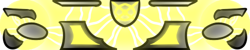
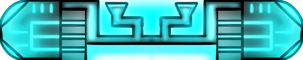
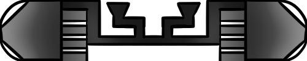
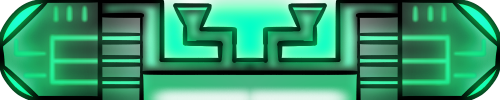
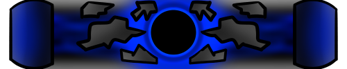
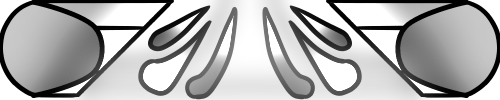
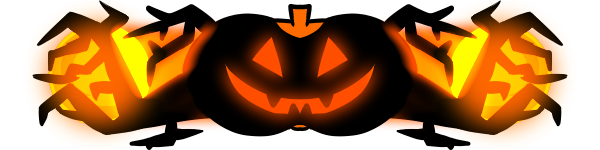
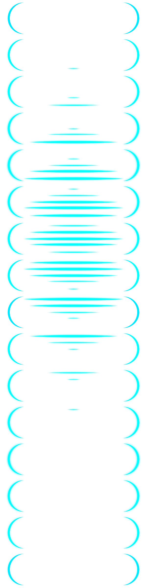

Platforms
Here you can find the complete list of all platforms in the game.
If you want to read about their attributes, click here!
Basic platform
- the most common platform in every game types
- general jump height
- no special abilities
- can spawn with projection, moving, troll, booster and activator (only in the Chaos gametype) attributes
Blinker platform
- unique to the Blink gametype
- higher jump height
- teleport you horizontally to a random position, and vertically a bit higher
- can spawn with projection attribute
Cloaker platform
Confuse platform
Energy platform
  - general platform in every game type except in Competitive Multiplayer game mode
- general jump height
- gives an energy to the jumper player, energy type depending on the platform's color
- after a player jumped on it, its energy storage is emptied
- at the start only blue Energy platforms spawn, but after a fair amount of energy collected, green Energy platforms start to take over their place
- jumping on a green Energy platform transforms a blue energy into a green energy
Enhancer platform
- a common and fearful platform in every game types
- general jump height
- shoots orbs at random platforms to give a random attribute to each of them
- in addition to the random attribute, it spreads all of its attribute values to the targeted platforms
God Slayer platform

- can be found in every game types but only during God fights
- higher jump height
- damages the current God with the damage of the jumper player
- the platform disappears after usage
Puller platform
- unique to the Chaos gametype
- general jump height
- pulls every platform in the screen closer
- with the moving attribute, it only pulls the platforms behind it, and only horizontally, but on a bigger distance
- can spawn with projection and moving attributes
Resurrection platform

- spawns in every game types in Cooperative Multiplayer when a player is dead
- higher jump height
- resurrects the longest dead player
- displays the player above it as a ghost that it will resurrect
- the platform disappears after usage
Teleporting platform
- unique to the Blink gametype
- lower jump height
- teleports a short distance after being jumped on
- can spawn with projection, moving, troll and booster attributes
Transformer platform
- unique to the Chaos gametype
- general jump height
- transforms every platform in the screen to another platform type (and keeps the attributes)
- can spawn with projection and booster attributes
Trick or Treat platform
- occasionally replaces the Energy platform during the Halloween Event
- general jump height
- have a 50-50% chance to either trick or treat the jumper player
- treating gives the player lots of energy
- the first trick gives every player Invisibility effect for a few seconds
- the second trick makes a lot of platforms disappear
- the third trick calls a swarm of ravens that knock away the players they touch
- the platform disappears after usage
Yeet platform
- unique to the Space gametype
- higher jump height
- yeets the jumper player in a random direction sideways
- with the moving attribute, it yeets the player in the direction this is moving
- can spawn with the projection, moving and booster attributes
Attributes
Platform attributes are specialties for each individual platform. Some are displayed via animations or visual clues, some are hidden, and are waiting for the players to mess with them.
Activator
- unique to the Chaos gametype
- the platform chooses another non-Basic platform, and activates its on-jump effect
- activations can chain
Blinkfected

- unique to the Blink gametype
- cannot be generated, only via Enhancer platform
- on touch gives the jumper player blinking effect
Booster
- can be generated in any game type
- increases the jump height from that platform
Invisible
- can only be applied to a platform via a Cloaker platform
- makes the platform not visible for the players
Moving
Projection
- can be generated in any game type
- the platform becomes invisible and creates a projection of itself above
- if a player jumps on the projection, it disappears, and the original platform turns visible
- the players can still jump on the original platform, even if it's invisible
- this is the most common platform attribute in the game
Troll
- can be generated in any game type
- pretends to be a normal platform
- if a player tries to jump on it, it moves away
- the deadliest platform attribute in the game's history